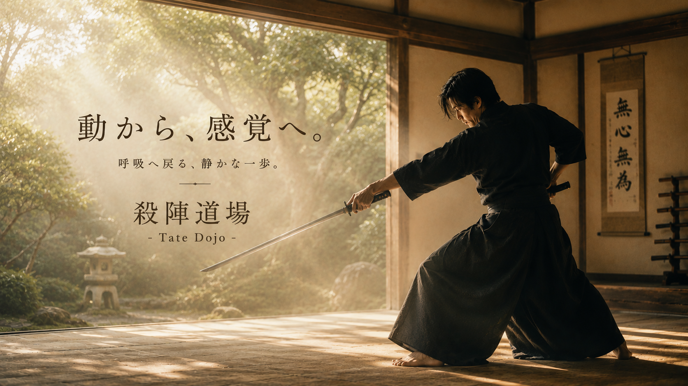
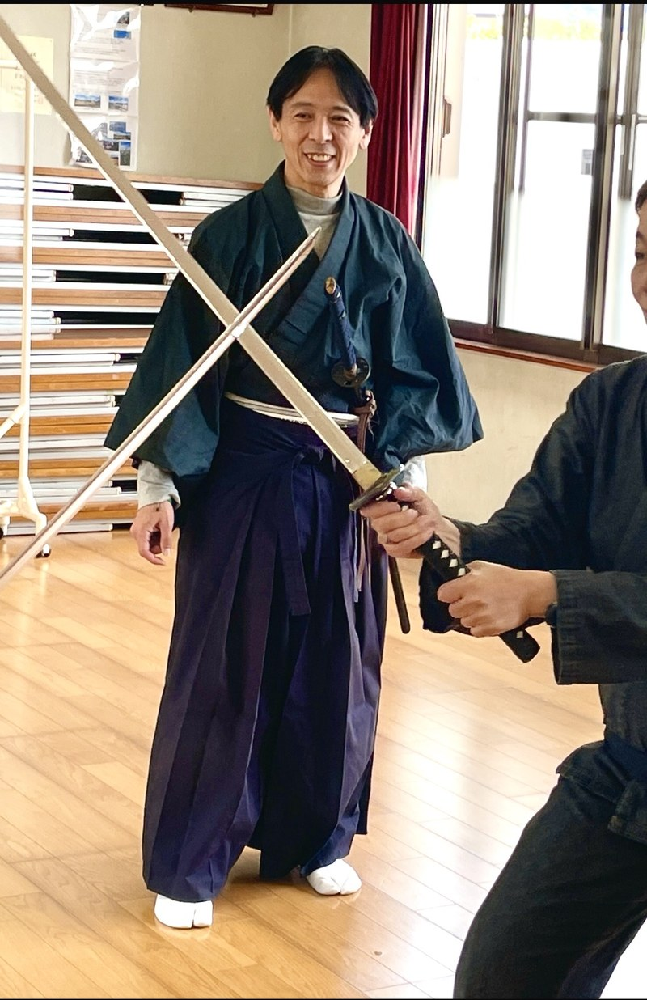

TATE DOJO
福和倭迅会は、2019年に殺陣団体として設立しました。その中心にあるのが、この殺陣道場です。

時代劇の剣戟シーンをはじめ、舞台や映像の世界で戦いの様を見せるためのお芝居全般を指します。
殺陣は、一人では成立しません。相手がいて、距離があり、間があり、呼吸がある。これらすべてが噛み合ったとき、初めて「場」が成立します。ただ技を並べるだけでは成り立たず、相手と空間を感じながら、その場を全員で創り上げる。勝負のためではなく、魅せるための芸術の技法です。
刀は、御神体です。抜き方も大切にしますが、それ以上に、納め方を大切にしています。倒すためではなく、守るために扱い、できれば、抜かないことが最善です。侍は守るためにいる存在で、主君のため、守りたい思想のためであれば命をかけて闘いますが、無益な争いはしません。舞台の上でも、それぞれにとっての正義がぶつかり、引くに引けなくなったときに、初めて抜く。そういう構成を大切にしています。この考え方が、倭迅会の殺陣の根底にあります。
殺陣に流派をつけることは、もともと考えていませんでした。流派を固定すると、小さな世界になってしまいます。だから、一つの流派にこだわらず、その時々に色々なことへ対応できるよう、自分の色を固定しないでおく。そのうえで、自分のものにしたいと感じたポイントだけを、こだわりとして取り入れます。そんな自由自在な殺陣でありたいという思いから、名乗るのであれば『自在流』と言うようになりました。これは、主宰の福田ひろしが目指してきたスタンスです。
刀という「外側の軸」を扱うことで、自らの正中線が自覚されます。一挙手一投足に説得力が生まれます。
殺陣は、相手との呼吸、間合い合わせの連続です。言葉になる前の気配を感じ取り、落ち着いて動く感覚が育ちます。
刀を持ち、声を出し、場に立つ。その経験が、日常の立ち居振る舞いを根本から変えます。
一、呼吸（息） すべての始まり。肚で呼吸をし、場と繋がる。
二、立ち方（構え） 重力に抗わず、大地に根を張るように立つ。
三、歩き方（運足） 軸を乱さず、静かに、鋭く移動する足運びを学ぶ。
四、振る（刀法） 腕の力ではなく、身体全体の連動で刀を扱う。
五、繋げる（殺陣） 相手と呼吸を合わせ、一連の流れとして物語を紡ぐ。
殺陣は、演じる役の「生」と向き合うことで成立します。倒す・倒される以前に、その役が生きていることを前提にして組み上げます。どう終わるかを考えることは、どう生きるかを考えることに繋がっています。
目的に合わせて選べる体系をご用意しています。趣味クラスは楽しむためのクラス、初級・中級・上級はプロを目指す人に向けたクラスです。
| はじめての1日体験 | 初回のみ／2時間。実際の稽古会に参加し、呼吸の整えから、立ち方や歩き方、刀の扱い方までの一連の流れを体験します。 | ¥2,000 |
|---|---|---|
| 趣味クラス | 体を動かしたり、趣味として殺陣を楽しみたい方向けのクラスです。月1〜2回の参加が目安。発表会参加も可能。都度払いのみ。 | ¥2,500／回 |
| 初級クラス | 基礎を正しく。舞台的な視点を加えながら、一対一の動きを中心に、表現としての殺陣を学ぶ。 | ¥3,500／回 4回チケット ¥12,000 |
| 中級クラス | 表現として使う。一対多の動き、役者側のカメラワークを取り入れ、舞台・ステージで通用するレベルへ。 | ¥6,000／回 4回チケット ¥20,000 |
| 上級クラス | 本番で通用する技術へ。舞台構成・演出・台本構成・撮影者側のカメラワークまで扱います。 | ¥8,000／回 4回チケット ¥28,000 |
| 個別レッスン | 2時間の枠で進めます。日時はご相談ください。 | ¥10,000 |
回数券（4回チケット）は3ヶ月有効です。会場費・交通費・出張費・備品費などが別途必要な場合があります。
現在は月に1〜2回、木曜日に開催しています。日程は月ごとに決まります。次回は12月17日（木）です。会場は、竹松公民館（南足柄市）です。
詳しいご案内は、お申し込みの際にご連絡します。見学のご希望も、申し込みフォームから受け付けています。
稽古日の設定や出張での対応もご相談いただけます。
まずは、体験から。見学だけでも大丈夫です。初めての方も、安心してお越しください。
通われている方の多くは、運動経験が少ない方や、刀に触れるのが初めての方々です。「身体が硬いから」「難しそうだから」と思っている方ほど、むしろ向いています。殺陣は、すでに完成した人のためのものではなく、今の状態から始める人のためのものです。

服装は、動きやすい服装で大丈夫です。お持ちでしたら、帯、浴衣や作務衣などの和装、袴、木刀、竹光があると稽古に参加しやすくなります。数に限りはありますが、レンタルも行っています。
イベントでの出演、出演者への殺陣指導、団体稽古、観光体験向けプランは、内容により個別のお見積りとなります。会場・人数・目的に合わせて形を考えますので、まずはご相談ください。
初回体験・見学のお申し込みは、フォームが便利です。種別で「初回体験」または「見学」をお選びください。クラスのお申し込み・ご相談も、同じフォームから受け付けています。